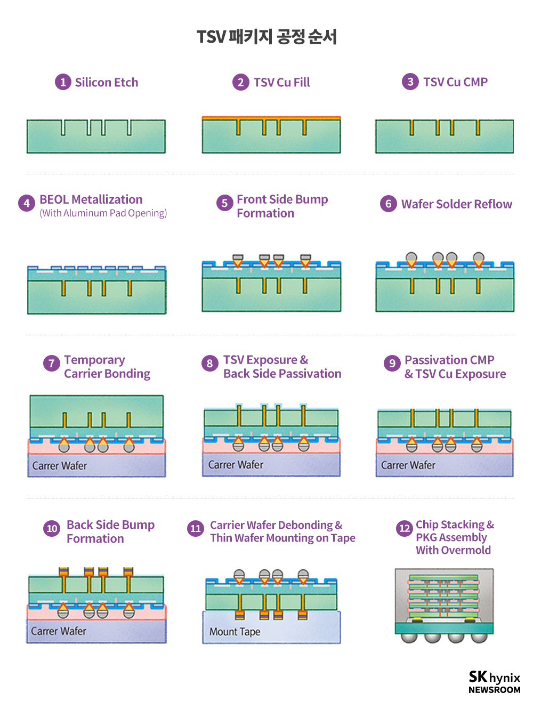
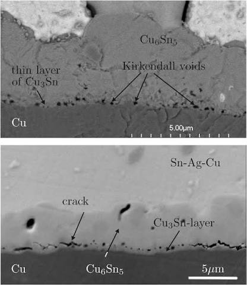
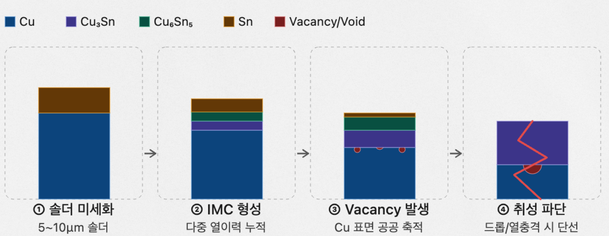
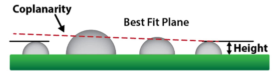
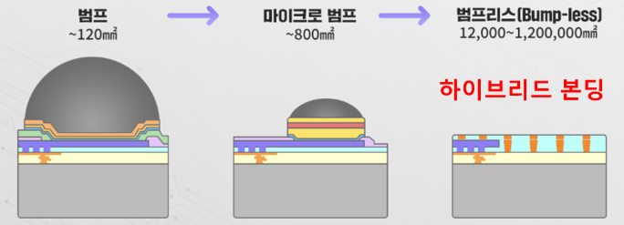
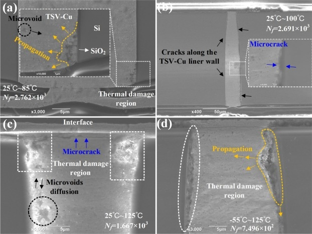
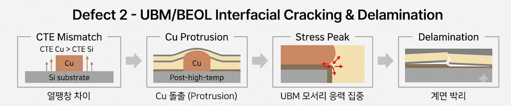

HBM UBM·µBump 결함 원인분석
Kirkendall Void·Wetting 등 4대 Defect 근본원인 규명 및 해결방안 도출
HBM Chip-on-Wafer(CoW) 패키지 공정 전반에서 범프+UBM 결함이 수율·신뢰성을 좌우하는 핵심 변수로 부상하는 배경에서, 원인 발현 시차 패턴·HBM 특화성·논문 신뢰성·작업자 조작요인 배제를 기준으로 Kirkendall Void, Bump 높이불균일, Wetting(젖음성) 불량, UBM/BEOL 계면균열및박리 4개 Defect를 선정해 TSV 12단계 공정 안에서 발생지점과 핵심원인을 규명하고 해결방안을 도출했습니다.
개요
어드밴스드 패키징(2.5D/3D 적층, HBM/TSV) 전반에서 범프+UBM 결함은 패키지 공정 내 발생 빈도가 높은 대표 결함이자 수율에 직결되는 핵심 결함입니다. 적층 수가 늘어날수록 접합부 결함의 영향도가 커지고, 초기 불량뿐 아니라 장기 신뢰성 문제로도 이어질 수 있어 HBM의 고단 적층·미세화 추세와 직접 연관됩니다. 다이당 수천 개의 마이크로범프가 촘촘한 피치(HBM3E→HBM4로 지속 미세화)로 형성되어 치명도가 극대화되는 구조이며, HBM4는 마이크로범프를 한 세대 더 유지하기로 했고 HBM6부터는 하이브리드 본딩(Cu-Cu 직접접합) 전환이 예고된 범프기술의 과도기라는 시의성도 고려했습니다.
TSV 패키지 공정
HBM CoW 패키지는 전면(Front Side) TSV 형성·범프 형성부터 후면(Back Side) 노출· 범프 형성, 최종 Chip Stacking까지 12단계로 진행됩니다. 4개 Defect 모두 이 공정 흐름 위의 특정 단계에서 원인이 발생하고, 이후 단계 또는 필드 사용 중에 발현되는 시차 패턴을 보입니다.

| 단계 | 공정 | 내용 |
|---|---|---|
| ①~④ | TSV 형성 및 BEOL 연결 | Silicon Etch로 수직 구멍을 내고 Cu로 채운 뒤 CMP로 평탄화, BEOL Metallization으로 기존 배선과 연결 |
| ⑤ | Front Side Bump Formation | UBM 증착 → 감광액 패턴 → 전기도금(Cu Pillar+Solder Cap) → 습식식각으로 범프 구조 완성 |
| ⑥ | Wafer Solder Reflow | 융점 이상 가열로 Solder를 재배열, 냉각 중 UBM 계면에 IMC층 형성 가능 |
| ⑦~⑪ | Carrier Bonding·Backside 공정·Debonding | 임시 Carrier 접합 → 후면 박화 및 TSV 노출 → Passivation CMP → Back Side Bump Formation → Carrier 제거 및 Tape Mounting |
| ⑫ | Chip Stacking & PKG Assembly | Die 절단·적층 후 TCB 또는 Mass Reflow로 Micro-bump 접속, Mold/Underfill로 패키지 완성 |
Kirkendall Void 발생
원인은 범프 형성 시점(⑤·⑩)에 발생하지만 발현은 리플로우(⑥)에서 시작되고, 파괴는 필드 사용 중(⑫ 이후) 드러나는 시차 패턴을 보이는 결함입니다.
- Cu-Sn 확산속도 비대칭(DCu ≫ DSn) — 근본 원인. Cu가 Sn 쪽으로 빠르게 빠져나가며 Cu UBM 표면에 vacancy가 대량 발생하고, 이 vacancy가 응집하며 Kirkendall Void가 형성됩니다
- UBM 도금첨가제(PEG·SPS) 잔류 — 범프 형성 시(⑤·⑩) 잔류한 첨가제가 확산 경로를 왜곡시켜 Void 형성을 가속합니다
- 저온 장기보관 위험 — 110℃가 155℃보다 오히려 Void·크랙 비중이 높게 나타나, 저온에서의 장기 확산 시간 자체가 위험 요인입니다

핵심 메커니즘
HBM 마이크로범프는 일반 대비 솔더 부피가 약 1/100(5~10μm)에 불과한데, 250℃ 리플로우(⑥) → 후면 열처리(⑩) → TCB·몰딩 경화(⑫)까지 반복 노출되며 다중 열이력이 누적됩니다. 이 과정에서 Cu+Sn → Cu₆Sn₅ → Cu₃Sn 순으로 금속간화합물(IMC)이 형성되며 Sn이 소진되고, 범프 전체가 IMC 기둥으로 변형되면 연성 솔더가 사라지고 Void가 조밀화되어 드롭테스트·열충격 시 유리처럼 매끄럽게 파단되며 단선이 발생합니다.

해결 방안
- Ni 배리어층 삽입 — Ni은 Sn 내 확산속도가 Cu보다 현저히 느려 계면 원자이동과 IMC/Void 성장을 억제합니다. 단일 Ni층보다 Ni/Cu 이중층이, 이미 형성된 Void가 후속 반응에서 자가 치유되는 효과까지 확보해 신뢰성이 더 높습니다
- 도금 첨가제 관리 — 피로인산 착화 도금 공정으로 전환해 첨가제(PEG·SPS)의 확산 경로 왜곡을 원천 차단하고, 나노결정질 Cu를 적용해 결정립계 분산 효과로 국소 Void 집중을 방지합니다
- 급속열처리 — 짧은 시간 고온 노출로 필요한 IMC만 형성하고 Void 핵생성에 필요한 확산 시간 자체를 허용하지 않습니다. Sn₃Ag₀.₅Cu/Cu 접합부 실험에서 짧고 빠른 열처리 프로파일의 효과가 확인되었습니다
Bump 높이불균일 발생
범프 형성(⑤·⑩) 단계에서 µBump들의 높이가 일정하지 않게 형성되며 Coplanarity(범프 끝면이 하나의 평면 위에 얼마나 잘 위치하는지)가 깨지는 결함입니다.

- 전기도금 전류분포 불균일 — 위치별 전류밀도 편차가 범프 높이 편차로 직결됩니다
- 도금액 유동 및 조성 편차 — Cu 이온·첨가제 농도, 온도·유량이 균일하지 않으면 도금 두께가 흔들립니다
- PVD Seed Layer 및 UBM 두께 불균일 — 초기 시드층 두께 편차가 이후 도금 두께 편차로 이어집니다
- TSV 높이불균일 및 Passivation CMP 평탄도 불량 — 하부 구조의 단차가 범프 형성 기준면 자체를 흔듭니다
- 웨이퍼 박화 두께편차 — 후면 가공 단계의 두께 편차가 범프 높이 산포로 전이됩니다
해결 방안
형성 단계 개선
- 도금 전류 분포 최적화 — 위치별 전류밀도 균일화, 전극-웨이퍼 거리 보정, 전류·시간 DOE, 웨이퍼 회전속도 최적화
- 도금액 관리 — Cu 이온·첨가제 농도 관리, 온도·유량 일정 유지, 필터·순환계통 점검, SPC 관리
- Seed layer와 UBM 균일도 개선 — PVD 파워·증착시간·회전 균일화, 정기 PM, 4-point probe로 저항 균일도 확인
- 포토 공정 개선 — PR 두께·노광량·focus 최적화, 범프 개구 CD 측정, PR 몰드 형상 AOI 검사
접합 단계 개선
- TCB 온도·압력·변위 정밀 제어 — 본딩 하중 균일화, 헤드-스테이지 평행도 보정, 다이별 변위 제어, 온도·유지시간 최적화로 균일한 압력 전달을 확보(단, 이미 심한 높이 차이 자체를 없애는 공정은 아님)
- 리플로우 프로파일 최적화 — Zone별 온도 캘리브레이션, Peak 온도·TAL 최적화로 과도한 솔더 퍼짐·IMC 과성장을 억제
차세대 대안 — 하이브리드 본딩
돌출된 마이크로 범프 자체를 형성하지 않는 Bump-less 하이브리드 본딩은 상하부 칩의 구리 패드와 절연막을 직접 접합하는 차세대 3D 적층 기술로, 전기 신호와 전원을 연결하는 Cu-Cu 접합과 칩을 기계적으로 고정하는 절연막-절연막 접합이 동시에 이루어집니다. Bump 높이 불균일 불량을 근본적으로 해결할 수 있는 방향입니다.

Wetting(젖음성) 불량 발생
원인은 Wafer Solder Reflow(⑥)에서 발생하고, 치명적 발현은 Chip Stacking & PKG Assembly(⑫)에서 나타나며, 일부는 ⑫ 자체의 타이밍 문제로도 발생합니다.
- UBM 표면 산화막·잔여물 — ⑥ Wafer Solder Reflow에서 UBM 표면에 산화막이나 이전 공정의 잔여물(파티클·유기물)이 남아있는 상태로 넘어갑니다
- 초고속 승온 & 타이밍 불일치 — ⑫ TC Bonding에서 솔더 용융과 NCF 경화가 초당 100℃ 속도로 수초 내 동시 진행되는 조건이 형상 안정화 시간을 빼앗습니다

메커니즘
- 산화막·잔여물 → 젖음 방해 — UBM 표면에 산화막·잔여물이 있으면 녹은 솔더가 고르게 퍼지지 못하고 들뜨거나 한쪽으로 뭉칩니다. 이 상태로 ⑫ 접합 단계까지 넘어가면 상하 칩이 물리적으로 연결되지 못해 미접합·단선(Open)이 발생합니다
- 시간 부족 → 형상 불안정 — 솔더가 표면장력에 의해 안정적인 돔 형태를 갖추기도 전에 NCF가 먼저 굳어버리며, 이 현상이 Non-wet 또는 Dewet으로 나타납니다
해결 방안
- 산화막 제거 및 표면 관리 — UBM 표면 산화막 제거 및 플럭스 활성 관리로 젖음성 자체를 개선하고, 이전 공정 잔여물에 대한 세정 공정을 강화합니다
- 타이밍 불일치 개선 — Surface Evolver 시뮬레이션으로 솔더 볼륨·패드 크기를 사전 최적화하고, NCF 경화 프로파일을 최적화하며, 본딩 헤드 온도 균일성을 향상시켜 솔더가 안정된 형상을 갖출 시간을 확보합니다
UBM/BEOL 계면균열및박리 발생
원인은 TSV Cu Fill(②)에서 축적되기 시작해 BEOL Metallization(④)에서 UBM 모서리 압박으로 이어지고, Wafer Solder Reflow(⑥) 및 Chip Stacking(⑫)의 250℃ 이상 고온·가압 공정에서 비가역적 구리 돌출과 계면 파단으로 발현됩니다.
- CTE Mismatch 및 Z축 쏠림 — CTESi ≈ 2.6×10⁻⁶/K, CTECu ≈ 16.5×10⁻⁶/K로 약 6.3배 열팽창 차이가 나는데, 수평 방향은 실리콘 기판으로 구속되므로 구리의 열팽창 변형률이 수직(Z축) 방향으로 100% 쏠립니다
- 고온 소성 변형 — Reflow·Chip Stacking(>250℃) 등 고온 공정에서 구리 내부 열응력이 항복 강도를 초과해, 식은 후에도 원상복귀되지 않는 비가역적 구리 소성 돌출(Protrusion)이 발생합니다
- UBM 모서리 응력 집중 — 돌출된 구리가 상부 SiO₂/Si₃N₄ 절연층 및 UBM 모서리 접합부를 밀어올려 모서리 지점에 수직 박리 응력과 전단 응력이 100MPa 이상 집적되고, 변형 에너지 방출률이 계면 파괴 인성치를 초과하면 미세균열이 시작되어 계면 전체로 박리가 진전됩니다


해결 방안
- TSV Cu Pre-Annealing — 후속 공정 전 300~400℃ 고온 열처리로 구리 소성 변형을 미리 유발한 뒤 CMP로 평탄화 제거합니다. 구리 결정립(Grain) 재결정화를 유도해 후속 250℃ 이상 고온 공정에서 구리 재돌출 현상을 원천 차단합니다
- 완충층 삽입 — 유연한 고분자 완충막(PI/BCB)을 삽입해 구리 열팽창에 따른 수직 박리 응력을 완충합니다. 밀어 올리는 열-기계적 힘을 완충막의 탄성 변형으로 흡수해 상부 UBM 및 BEOL 절연층 파손을 예방하는 에어백 효과입니다
- UBM 계면 구조 최적화 — UBM 모서리 프로파일 개선 및 접착층(Ti/TaN) 두께 최적화로 모서리에 쏠리는 응력 피크를 분산시키고, 변형에너지 방출률을 계면 파괴 인성치 미만으로 유지해 미세균열 진전 및 박리를 차단합니다
기업별 대응방안 비교
4개 Defect 각각에 대해 SK하이닉스·삼성전자·마이크론이 실제로 채택하고 있는 접근 방식을 조사했습니다. 세 회사 모두 결함 자체를 없애는 방향은 같지만, 회사별 강점 기술(전해도금 AI 제어, TCB 정밀 제어, 소재 최적화 등)에 따라 구현 방식이 갈립니다.
| 결함 유형 | SK하이닉스 | 삼성전자 | 마이크론 |
|---|---|---|---|
| 범프 높이불균일 | 전해도금액 첨가제 거동 AI 실시간 분석, 펌핑 속도 미세 조절로 Flat-top 형성 | 초정밀 3D AOI 광학 전수 검사로 불량 다이 사전 필터링, CB 헤드 초정밀 Tilt 방지 제어 | 웨이퍼 레벨 전면 CMP 고도화로 범프 상단부 높이 산포 직접 연마 |
| Kirkendall Void | Cu-Sn 확산을 막는 Ni 장벽 밀도·두께 극대화, 오븐 Peak 온도 정밀 튜닝 | 차세대 LAB(Laser-Assisted Bonding) 연구, 국소 부위 1~2초 급속 가열/냉각 | CB 장비 열 인가 프로파일 고도화, 접합 전 웨이퍼 레벨 범프 합금 비율 통제 |
| Wetting 불량 | 산화막 제거 성분(Flux) 포함 기능성 MUF 적용 | 본딩 챔버 내 환원 가스(개미산 등) 주입으로 플럭스 없이 산화막 화학적 제거 | UBM 증착 전 최고 수준 Plasma Descum, 본딩 시 초고순도 질소 분위기 유지 |
| CTE 불일치·응력 집중 | 강력한 EMC 매트릭스로 Z축 팽창 구속 | 비전도성 필름(NCF) 압착 + 고온 Pre-annealing | 응력 분산·흡수형 특수 필름 레이어 적용, Cu 도금 불순물 제어로 항복강도 강화 |
배운 점
- 같은 범프 결함이라도 원인 발생 시점과 발현 시점이 공정 단계상 멀리 떨어져 있을 수 있다는 것을 배웠습니다 — Kirkendall Void는 범프 형성(⑤)에서 씨앗이 뿌려져 필드 사용 중(⑫ 이후)에야 파괴로 드러나는데, 이 시차를 고려하지 않으면 원인을 엉뚱한 단계에서 찾게 됩니다
- Wetting 불량을 분석하면서 결함의 근본 원인이 두 가지 방향(표면 상태·타이밍)에서 동시에 온다는 것을 실제 X-Ray·단면 이미지로 확인했고, 한쪽만 개선해서는 해결되지 않는다는 것을 체감했습니다
- CTE Mismatch처럼 물성값 하나(열팽창계수 차이 6.3배)로 응력 집중 위치와 파괴 메커니즘 전체를 설명할 수 있다는 것을 배우면서, 결함 분석에서 정성적 관찰과 정량적 물성 데이터를 함께 봐야 한다는 것을 익혔습니다
- 같은 결함이라도 회사마다 해결 접근이 다르다는 것을 비교하면서, 공정 개선 방향이 하나로 정해져 있는 것이 아니라 각 회사가 가진 장비·소재 강점에 따라 최적해가 달라진다는 것을 확인했습니다